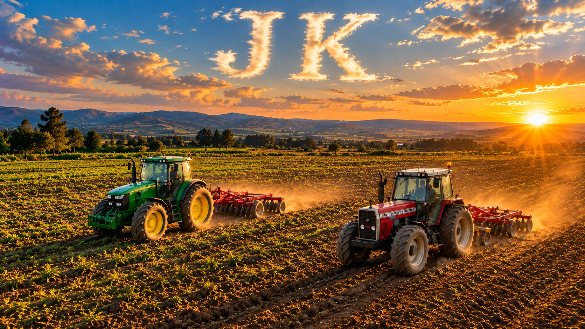

Somos tu socio en la preparación de la tierra
AgroTrac JK te brinda servicios agrícolas con tractores e implementos pesados. Trabajamos con agricultores de la zona que necesitan su terreno listo a tiempo y bien hecho.
Llegamos puntuales, cuidamos el consumo de combustible para que tu trabajo salga más económico y mantenemos la maquinaria revisada para que no se detenga en plena faena.

Servicios agrícolas
Todos se cotizan por hora o por hectárea. Toca “Cotizar” y se abre WhatsApp con el mensaje listo.
Cómo calculamos tu presupuesto
Sin letra chica: el precio depende de cuatro cosas que revisamos contigo antes de empezar.
Evaluación del terreno
Tamaño y estado del lote.
Distancia
Traslado del tractor hasta tu propiedad.
Tipo de suelo
Suelo duro o suelto cambia el tiempo de trabajo.
Tu requerimiento
Qué trabajo necesitas y para cuándo.
Por hora
Ideal para lotes pequeños, terrenos irregulares o trabajos combinados.
Por hectárea
Ideal para superficies grandes: sabes el costo total desde el inicio.
Dónde trabajamos
Atendemos las siguientes zonas. Si tu comunidad no aparece, escríbenos: podemos evaluar el traslado.
- [RAMADAS]
- [LA POZA]
- [SAN GERONIMO]
- [SAN JORGE]
- [ otras comunidades del municipio de MOJOCOYA
Pide tu cotización hoy
Cuéntanos qué necesitas y te respondemos por WhatsApp con el precio.
Escribir por WhatsApp